Building a Marvel Hero catalog app using Blazor Web Assembly
Introduction
This article describes all the steps on how to develop a Marvel Hero catalog app, using Blazor Web Assembly, and is a companion guide to the Festive Tech Calendar 2022 session I presented. This app introduces Blazor .NET development, and more specifically how to easily create a Single Page App using HTML, CSS and API calls to an external API Service at https://developer.marvel.com
As I am learning development with .NET for the first time in 47 years, and succeeding in having an actual app up-and-running, I wanted to share my experience, inspiring other readers (and viewers of the session) to learn coding as well. And maybe becoming a passionate Marvel Comics fan as myself.
I hope you enjoy the steps, feel free to contribute to this project at petender/FestiveBlazor2022live (github.com) if you want to co-learn more Blazor stuff together with me.
Prerequisites
If you want to follow along and building this sample app from scratch, you need a few tools to get started:
- Visual Studio 2022 to develop the application (VSCode or other dev tools will work as well)
- Community Edition can be downloaded for free here (Visual Studio 2022 Community Edition – Download Latest Free Version (microsoft.com))
- GitHub Account to store the application code in source control
- Sign Up for free here (https://github.com/join)
- Azure Subscription to run Azure Static Web Apps web application
- Get a Free Azure Subscription here (https://azure.microsoft.com/en-us/free/)
- Marvel Developer Account to get access to the API back-end
- Register for free at https://developer.marvel.com
Deploying your first Blazor Web Assembly app from a template
Visual Studio provides Blazor Web Assembly templates, both as an “empty template”, as well as one with a functional “sample weather app”. Although I won’t use a lot from the template, I like to start with the weather app sample application, as it comes with all necessary building blocks to get started.
- Launch Visual Studio 2022, and select Create New Project
- From the list of templates, select Blazor Web Assembly App
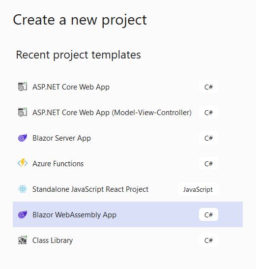
- Click Next to continue the project creation wizard
- Select .NET 7 (Standard Term Support) as Framework version
- Keep all other default settings as is
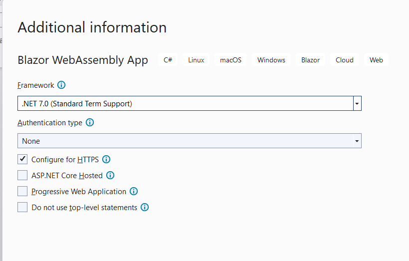
- Click Create to complete the project creation wizard and wait for the template to get deployed in the Visual Studio development environment. The Solution Explorer looks like below:
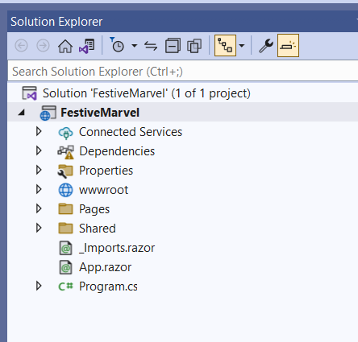
- Run the app by pressing Ctrl-F5 or select Run from the upper menu (the green arrow) and wait for the compile and build phase to complete. The web app should load successfully in a new browser window.
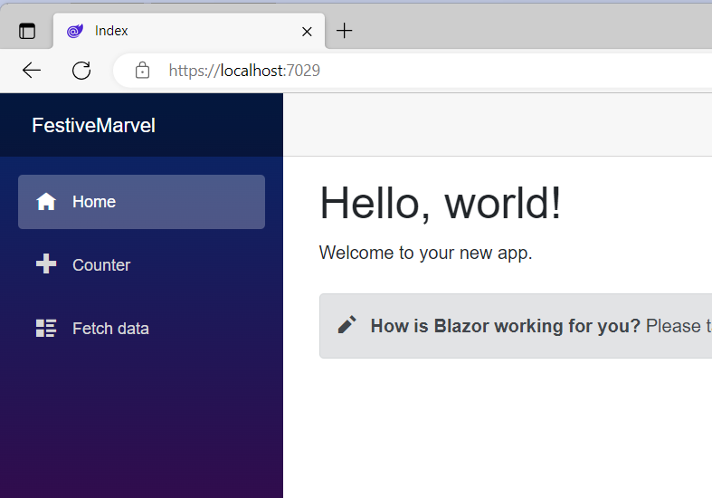
- Wander around the different parts of the web app to get a bit familiar with the features. The Home button brings up the index.razor page, and can be seen as the Homepage of the app. The + Counter Page demonstrates how you can build out interaction using buttons and running a count function. The Fetch data section shows a basic outcome of an API-call to a JSON-data-structure, to publish data in a gridview.
- Close the browser, which brings you back into the Visual Studio development environment.
- This confirms the Blazor Web Assembly app is running as expected
In the next section, you learn how to update the index.razor page and add your own custom HTML-layout, CSS structure and actual runtime code.
Updating the template with your custom code
Blazor allows you to combine web page layout code, basically HTML and CSS, together with actual application source code, in the same razor files. I can’t compare it with previous development environments, but it seems to be one of the great things about Blazor – and I really like it, since it’s somewhat simplifying the structure of your application source code itself.
Another take is creating the web page layout first, and only adding logic later on. So let’s start with creating a basic web page, adding a search field and a button
- You can chose to reuse the index.razor sample page and continue from there, or create a new Razor Page and update the route path. For simplicity and ease of this scenario, I’m reusing the existing index.razor page.
- In this part, we start with adding a search field and a search button to the web page layout. Insert the following snippet of code:
<**PageTitle**>Index</**PageTitle**>
<h1 class="text-center text-primary"> Blazor Marvel Finder</h1>
<div class="text-center">
<div class="p-2">
<input class="form-control form-control-lg w-50 mx-auto mt-4" placeholder="Enter Marvel Character" />
</div>
<div class="p-2">
<button class="btn btn-primary btn-lg">Find your Favorite Marvel Hero</button>
</div>
</div>
- This adds the necessary objects on the web page.
- And let’s run this update to see what we have for now.
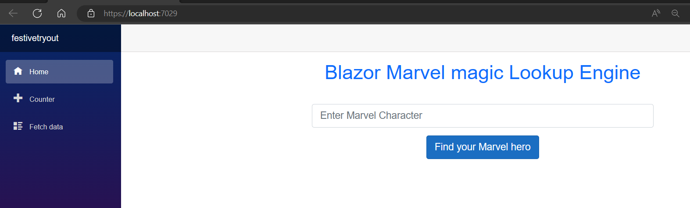
- So the layout for the search part of the app is done. Let’s move on with the design of the actual response / result items. The return from the Marvel API can be presented in a table gridview, but that’s not that nice-looking; I remembered having physical cards as collector items as a kid, so I did some searching for a similar digital experience. Interesting enough, there is a CSS-class object “card”, which nicely reflects this experience. So let’s add the next snippet of code for this response layout.
- Add the following code:
<div class="container">
<div class="row row-cols-1 row-cols-md-2 row-cols-lg-3">
<div class="col mb-4">
<div class="card">
<img src="https://via.placeholder.com/300x200"
class="card-img-top">
<div class="card-body">
<h5 class="card-title">Marvel Hero Name</h5>
<p class="card-text">
Character details
</p>
</div>
</div>
</div>
</div>
</div>
What this snippet does, is adding a “container” object, in which we create a small table view having 3 rows and 1 column. The card composition shows the Hero title on top, the Marvel Hero character details in the middle and an image of the character as well.
- Let’s run the code again to test if everything works as expected.
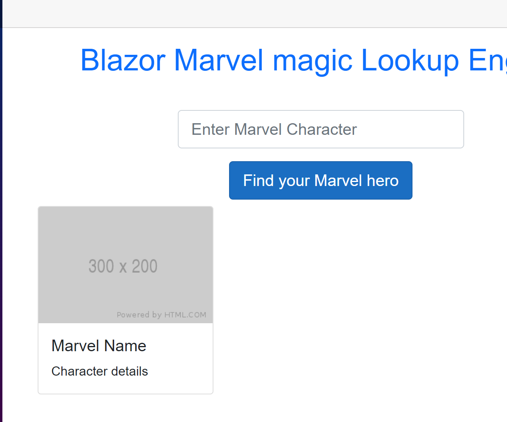
- Now wait, we lose quite some time on stopping the app, updating code, starting it again – so what we can do is use the new VS2022 feature called Hot Reload / if I set this to “Hot Reload on Save”, it will dynamically update the runtime state of the app based on my edits. Let’s check it out.
- While in debugging mode, check the “flame” icon in the menu:
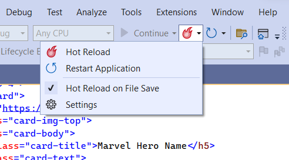
- Enable the setting “Hot Reload on File Save”.
- Edit the card-title “Marvel Hero Name” to “Marvel Character Name” and check how the app refreshes itself without needing to stop/start.
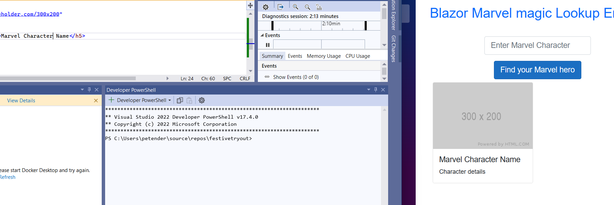
- The search field is not doing anything yet, so we need to make sure – that whenever we type something in that field, it kicks of an API call to the Marvel API back-end.
- First, we need to use the bind-value parameter for this field, linking it to a search task; Update the line with the field box as follows:
<input class="form-control form-control-lg w-50 mx-auto mt-4" placeholder="Enter Marvel Character" @bind-value="whotofind" />
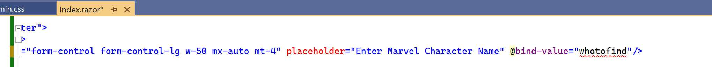
add @bind-value=”whotofind” at the end of the line
Ignore the errors regarding the “whotofind” for now.
-
Next, we need to update the button code to actually pick up an action when clicking on it; this is done using the @onclick event
Add @onclick=FindMarvel
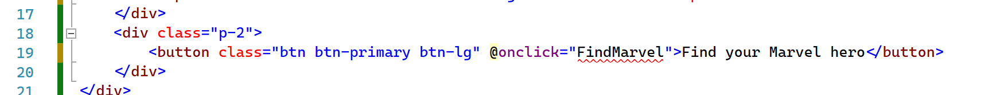
- The code snippet complains about unknown attributes, which is what we need to add in the actual code section of the app page:
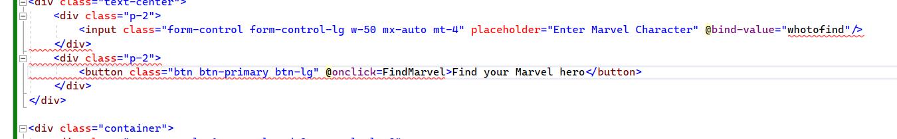
- Those were the 2 placeholders for the Blazor code section, which can be defined within the same Razor page, a rather unique approach to Blazor code.
- Save the updates again; notice how Hot Reload is not able to refresh the changes just like that, since it is more than just a cosmetic change in HTML.
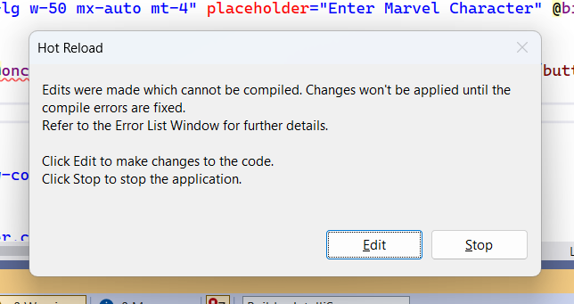
- Click Edit for now, since we will add more code to the Page.
Add the following @code section below the HTML/CSS layout
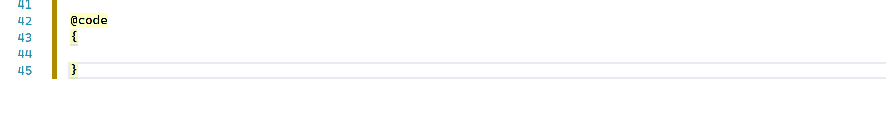
- Within the curly brackets, we can use regular C# code
- Start with defining a string for the “whotofind”
- Followed by defining a method (task) for the FindMarvel onclick action – for now, let’s write something to the console to validate our search field is working as expected
The code syntax looks like this:
private string whotofind;
private async Task FindMarvel()
{
Console.WriteLine(whotofind);
}
- The string “whotofind” refers to the search field object, where the Task “FindMarvel” refers to the button click action. So easy said, whenever we click the button, it will pick up the string content from the search field, and send it to the Marvel API back-end. As we don’t have that yet, I’m just writing the data to the console, which is always a great test to validate the code is working as expected.
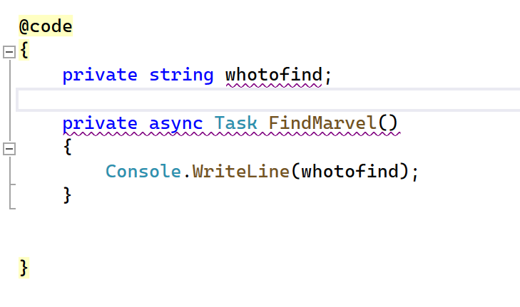
- Save the file, which will throw a warning regarding the hot reload. Since we added new actual code snippets, hot reload can’t just go and recognize it. So a reload is needed…

-
Select “Rebuild and Apply Changes”
-
Enter the name of a Marvel character, for example “thor”, which will move that to the Output console. This confirms both the bind-value property as well as the search button and corresponding action behind it is working as it should be.
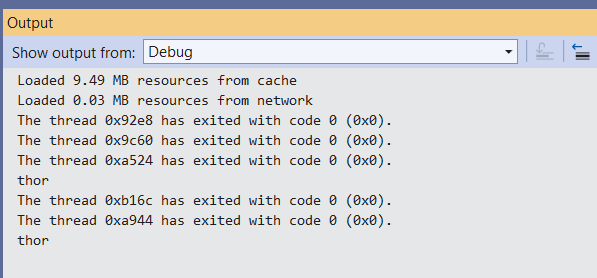
-
I think the app is ready from our perspective, so it’s time to set up the Marvel API-part of the solution in the next section.
Configuring the Marvel Developer API Backend
- head over to the Marvel Developer website https://developer.marvel.com and grab the necessary API information.

-
Select Create Account + Accept Terms & Conditions
-
Grab the API keys (public & private)
Public: 579a41c9eccaf70a3a09c1xxxxxxxxxxx
Private: 6362bd53a4c307c96fb27xxxxxxxxxx
-
To allow requests to come into the Marvel API back-end, you need to specify the source URL domains where the requests are coming from. Add localhost here, which is the URL you use for all testing on your development workstation. Later on, once the app runs in Azure, you need to add the Azure Service URL here as well…

- Once set up, head over to “interactive documentation”, and walk through the different API placeholders and keywords one can use, to show the capabilities. For the app later on, we will use the “namestartswith”, as it is the most easy to use – names could work, but it requires knowing the explicit name of the character, and having it correctly spelled.


- Click the “Try it out” button. The result shows the outcome + the exact URL that was used:

- Blazor Web Assembly already has an HTTP Client built-in, although if you want, you could also find Nuget packages that provide similar functionality – but for now, let’s stick with the built-in one. The details of this service are part of the program.cs file
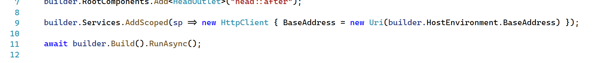
- The hostenvironment points to our local development workstation, so the only thing we need to do hear is changing this Uri to the Marvel API Gateway Uri, as follows:
https://gateway.marvel.com:443/v1/public/"
builder.Services.AddScoped(sp => new HttpClient { BaseAddress = new Uri(“https://gateway.marvel.com:443/v1/public/") });
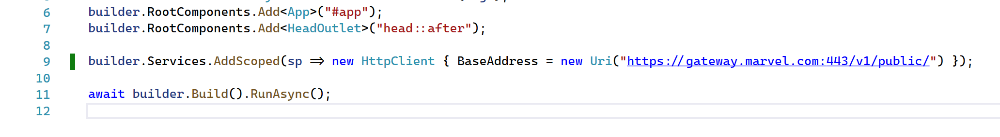
- next, relying on Blazor dependency injection, create a reference to the HTTPCLient in your Blazor index.razor page
@page "/"
@inject HttpClient HttpClient
<**PageTitle**>Index</**PageTitle**>
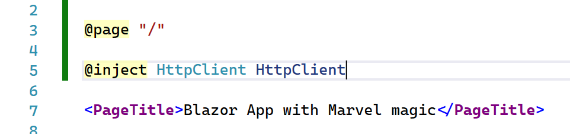
- As you could see from the Marvel output, they are using JSON; this means, when calling the HttpClient, we also receive a JSON object back, which is not useful for presenting the data as such. What we need to do is deserialize the result, for which we create a class

- A useful website for helping with this, is jSON2CSharp.com, allowing you to paste in a JSON payload, which gets converted to c# class structure

- In the VStudio project, create a new folder “Models”, and add a new Item in there, called MarvelResult.cs

- We could copy the content from the JSON deserialize output into this class object, but for this sample, we don’t need all the provided data by Marvel – so I made some changes and ended up with the core pieces of data I want, like image, name, description
The code snippet looks like follows:
{
public class MarvelResult
{
public string AttributionText { get; set; }
public Datawrapper Data { get; set; }
public class Datawrapper
{
public List<Result> Results { get; set; }
}
public class Result
{
public int Id { get; set; }
public string Name { get; set; }
public string Description { get; set; }
public Image Thumbnail { get; set; }
public class Image
{
public string Path { get; set; }
public string Extension { get; set; }
}
}
}
}
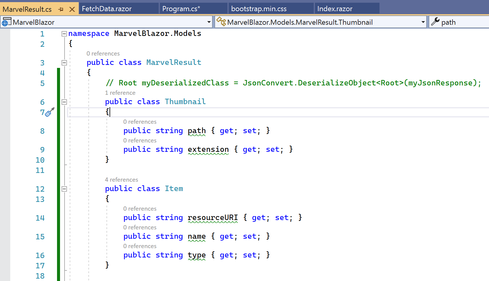
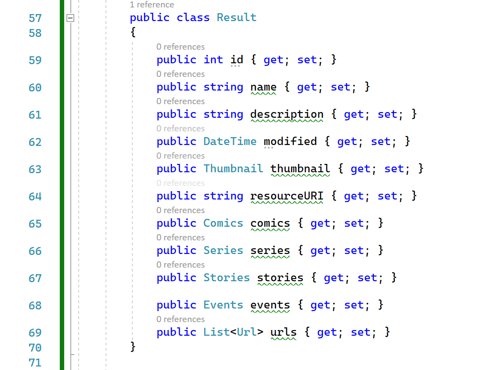
- With the class in place, let’s update the code to compile the dynamic URL, instead of the fixed gateway.marvel.com one. First, we need to add a private MarvelResult, reflecting the data class we just created;
private MarvelResult _marvelResult;
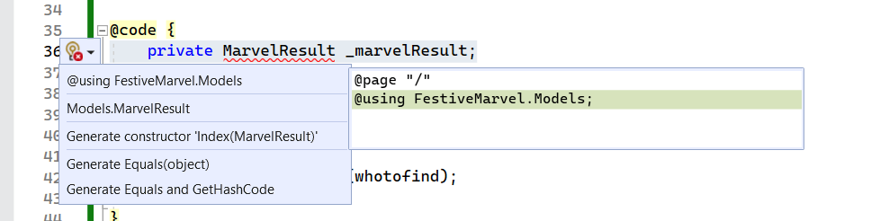
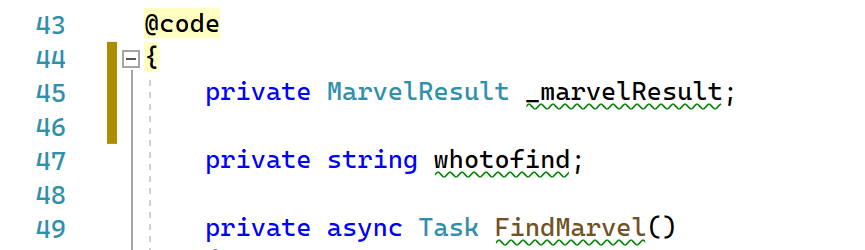
- as we stored this in a different folder within the application source code, we also need to update our Page details, telling it to “use” the Models subfolder to find it. This is done using the @using statement on top of the index.razor
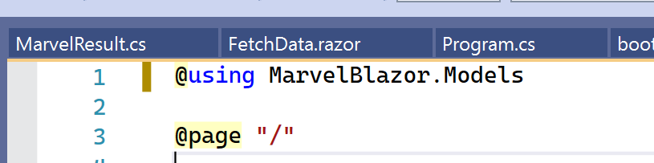
Where now the Class gets nicely recognized
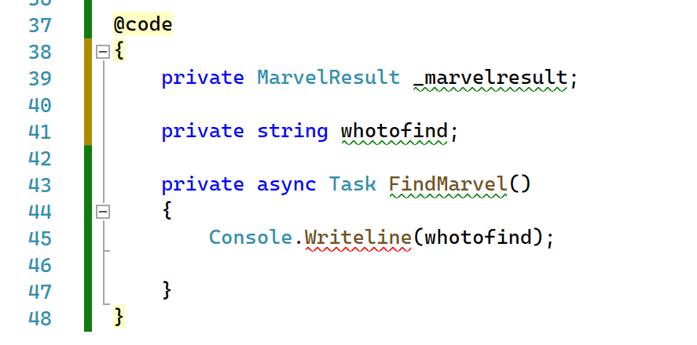
- Let’s update the Task FIndMarvel, with the required code snippet to recognize the dynamic URL to connect to, as well as calling the HttpClient function
- As per the Marvel API docs, we need to integrate the api Private key into our URL search string, so we have to define the string for this
@code
{
private MarvelResult _marvelResult;
private string whotofind;
private string MarvelapiKey = "579a41c9eccaf70a3a09c1722ef6c2fc";
- After which we can update the Task FindMarvel as follows:
private async Task FindMarvel()
{
Console.WriteLine(whotofind);
var url = $"characters?nameStartsWith={whotofind}&apikey={MarvelapiKey}";
_marvelResult = await HttpClient.GetFromJsonAsync<MarvelResult>(url, new System.Text.Json.JsonSerializerOptions
{
PropertyNamingPolicy = System.Text.Json.JsonNamingPolicy.CamelCase
});
}

- Where the url is coming from the gateway.marvel.com part in the HttpClient service definition + the dynamic url part where we specify the characters search option, the nameStartsWith, pointing at the bind-value object whotofind, and adding the MarvelapiKey string.
- While all the code pieces are done, note that .NET6 started checking for Nullable values. This is what the green squickly lines are identifying. What this means is that the value could be equal to null, which could potentially break your application, since it expects to have a real value in there.
- I wouldn’t recommend it to change, but for this little sample app, it would be totally OK to disable the nullable check. This can be done from the Properties of the Project
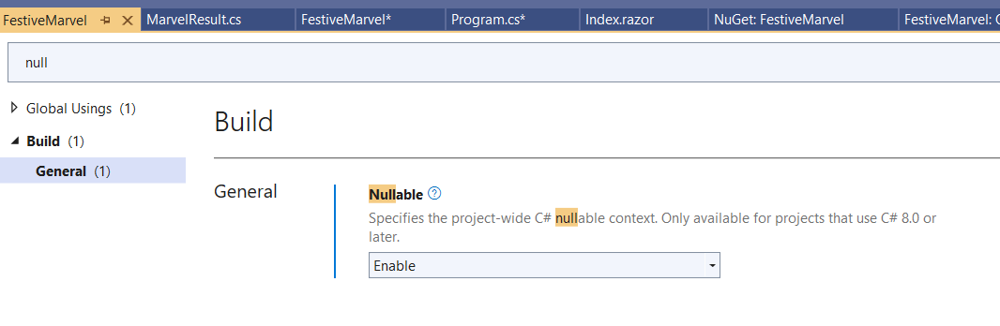
- That’s all from a code snippet perspective, where now the last piece of updates is back into the HTML Layout of the web page itself, updating the content of the card object:
- Since we most probably get an array of results back, meaning more than one, we need to go through a “for each” loop; also, there might be scenarios where we are not getting back any results (like the character doesn’t exist, a typo in the character’s name,…), so we will add a little validation check on that too, using an if = !null
Let’s go ahead!
- At the top of the card object (class=container), or right below the section where we defined the search button, insert the @if statement, and move the whole div section between the curly brackets
@if (_marvelResult != null)
{
<div class="container">
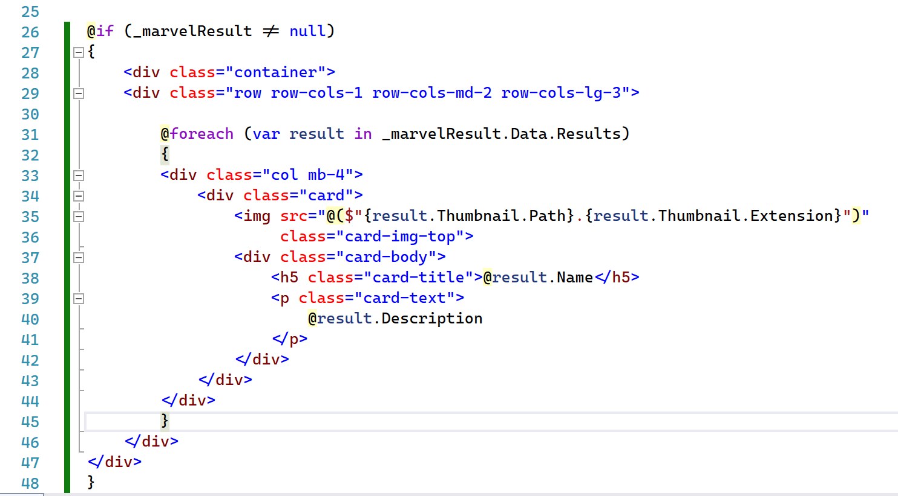
- Next, define the @foreach loop for the actual card item, and update the image placeholder URL with the content from the MarvelResult JSON string (thumbnail path and extension:
@foreach (var result in _marvelResult.Data.Results)
{
<div class="col mb-4">
<div class="card">
<img src="@($"{result.Thumbnail.Path}.{result.Thumbnail.Extension}")"
class="card-img-top">
<div class="card-body">
<h5 class="card-title">@result.Name</h5>
<p class="card-text">
@result.Description
</p>
</div>
</div>
</div>
}
- Run the app and see the result in action

- That’s it for now. Great job!
Making the cards ‘flip’
Note: this part is left out of the Festive Tech Calendar presentation to keep the video within the expected time – what we’re doing here is integrating more CSS layout components on to a new Page in the web app, which provides a more dynamic look-and-feel to the Marvel cards we have.
While CSS can be difficult – and trust me it is – I literally googled for “flipping cards CSS” and found a snippet of code on https://w3schools.com, and it worked almost straight away…
Here we go:
-
Let’s copy the current state of the page we have, and store it in a different page; so we grab index.razor and copy/paste it to flip.razor this will allow me to also demonstrate some other Blazor features around Menu Navigation and how to use object-specific css; meaning, CSS that will only be picked up by the specific page, and not interfere with the rest of the application CSS we already have.
-
Open flip.razor page; First thing we need to change, is the Page Routing, pointing to the “/flip” routing directory instead of the “/”, as that one is linked to the index.razor page.

-
Go to this link: https://www.w3schools.com/howto/tryit.asp?filename=tryhow_css_flip_card
-
Select the code between the objects, including the / tags
<style>
body {
font-family: Arial, Helvetica, sans-serif;
}
.flip-card {
background-color: transparent;
width: 300px;
height: 300px;
perspective: 1000px;
}
.flip-card-inner {
position: relative;
width: 300px;
height: 300px;
text-align: center;
transition: transform 0.6s;
transform-style: preserve-3d;
box-shadow: 0 4px 8px 0 rgba(0,0,0,0.2);
}
.flip-card:hover .flip-card-inner {
transform: rotateY(180deg);
}
.flip-card-front, .flip-card-back {
position: absolute;
width: 300px;
height: 300px;
-webkit-backface-visibility: hidden;
backface-visibility: hidden;
}
.flip-card-front {
background-color: #bbb;
color: black;
}
.flip-card-back {
background-color: #2980b9;
color: white;
transform: rotateY(180deg);
}
</style>
- and paste this under the @using section and the section of the code you already have (Note: ignore the @using marveltake2.models in the screenshot, it’s the name of my test project)

- Next, we need to update the layout of the card item itself, in the section within the “foreach” loop, as that’s where the data is coming in, and getting displayed
@foreach(var result in _marvelResult.Data.Results)
{
<div class="col mb-4">
<div class="flip-card">
<div class="flip-card-inner">
<div class="flip-card-front">
<img class="thumbnail" src="@($"{result.Thumbnail.Path}.{result.Thumbnail.Extension}")" style="width:300px;height:300px;">
</div>
<div class="flip-card-back">
<h5>@result.Name</h5>
<p>
@result.Description
</p>
</div>
</div>
</div>
</div>
}
What we do here is basically pointing to the different CSS-snippets for each style we want to get applied; we have the flip-card div class, next the flip-card-inner and flip-card-front. For the front, we want to use the image, so we keep the img class details as is, but change the width and height to 300px, to make sure it looks like a nice rectangular on screen.
-
Next, we add a class for the flip-card-back, where we will show the Marvel character name and description.

That’s all we need to have for now; so let’s have a look, by launching the app
- Since the previous page was index.razor, it’s getting loaded by design (from the index.html). so we need to update the URL to pick up the /flip page, by adding it to the end of the URL, such as https://localhost:7110?flip (note, the port number will be different on your end)

- Search for a character, and see the outcome cards:

- About the same as before, but let’s hoover over a card:
- It flips and shows the character name and description (if provided by Marvel) to the back of the card

Cool!!
- Let’s switch back to the code and add a menu item for the “flip” page to our left-side navigation menu.
- Open the file NavMenu.razor within the Shared folder.
- Add a new section for this menu item, by copying one from above + make minor changes to the href reference (flip) and change the Menu item word to Flip
- The icons are coming from the open iconic library, which is also referenced as part of Blazor bootstrap. Know you can change to MudBlazor, Telerik Progress or several other bootstrap frameworks to have layout-rich styles.
- Open https:://useiconic.com and find a suitable icon, for example loop-circular

<div class="nav-item px-3">
<**NavLink** class="nav-link" href="flip">
<span class="oi oi-loop-circular" aria-hidden="true"></span> Flip
</**NavLink**>
</div>
- When you run the app again, the new Menu item will appear. Given the href=”flip”, it will redirect to the base URL (https://localhost:7110) /flip route

Since we are changing the layout a bit here, why not modify the default purple color from the Blazor template, to the well-known Marvel dark-red?
- Open MainLayout.razor
- Notice the
- Paste in the following style object:
<div style="background-image:none;background-color:darkred;" class="sidebar">
- This changes the default purple color to darkred.

- This completes our development part. Let’s move on to the next step, and integrate our app code with GitHub Source Control (which actually should have happened at the start, before writing a single line of code – but hey, it’s a sample scenario right)
Integrating Visual Studio with GitHub Source Control
- With that, let’s close this project and save it to GitHub; so you can grab it as a reference. From the explorer, click “Git changes” tab and select Create GitHub Repository

-
Click Create and Push, and provide a description as commit message (I typically call this first action the “init”).
-
Wait for the git clone action to complete successfully. Connect to the GitHub repository and confirm all source code is there.
Note: the actual source code I used for the Festive Tech Calendar presentation can be found here: petender/FestiveBlazor2022live (github.com)

- Whenever you would make changes in the source code in Visual Studio and save the changes, Git Source Control will keep track of these and allowing you to commit the changes into the GitHub repository. I would recommend you to commit changes frequently, basically after each “important” update to the code.
Publish Blazor Web Assembly app to Azure Static Web Apps
In this last section, I will show you how to publish this webapp to Azure Static Web Apps, a web hosting service in Azure for static web frameworks like Blazor, React, Vue and several other.
-
From the Azure Portal, create new resource / static web app

-
Provide base information for this deployment:
-
Resource group – any name of choice
-
Name of the app – any unique name for the app
-
Source = GitHub
-
Plan = Free
-
Region = any region of your choice

-
Scroll down and authenticate to GitHub; Next, select your source repo in Github where the code is stored (the one we just created)

-
Click Build Details to provide more parameters regarding the Blazor app itself. Note you need to change the default App location from /Client to /, since our source code is in the root of the Blazor Web Assembly, without using ASP.Net hosted back-end.

-
Once published, it will trigger a GitHub Actions pipeline to publish the actual content

-
The YAML pipeline code is stored in the .github/workflows/ subfolder within the GitHub repository. You shouldn’t need to update this file though. It just works out-of-the-box.

-
Check in Actions what’s happening:

-
Open the details for the Build & Deploy workflow

-
Selecting any step in the Action workflow will show more details:

-
Wait for the workflow to complete successfully.

-
Navigate back to the Azure Static Web app, click it’s URL and see the Blazor Web App is running as expected.

-
When searching for a Marvel Character, this throws an error though, which can be validated from the Inspect option of the browser:

-
Remember at the start, where we configured the API calls at the Marvel Developer site, we needed to specify the source URLs from where the calls are allowed. This Azure Static Web App URL is not configured. (Hence why I didn’t worry too much about including my APIKey as hard-coded string in the source code).

-
Click Update to save those changes. Trigger a new search, which should reveal the actual Marvel character details. Remember you can use both the default (index) page, as well as the flip page.
Summary
In this article, I provided all the necessary steps to build a Blazor Web Assembly application. Started from the default template, you updated snippets of code to create a search field and corresponding action button to trigger the search. You learned about using HTTPClient to interact with an external API Back-End. Once this was all working, you looked into using some additional “flip card” CSS layout features, and how to update the Blazor Navigation Menu.
Once the development work was done, we saved the code in a GitHub repository.
Last, you deployed an Azure Static Web App, interacting with the GitHub repository to pick up the source code and publish it using GitHub Actions workflow.
I would like to thank the organizing team of Festive Tech Calendar 2022 for having accepted my session submission for the 3rd year in a row. Especially since this was my first attempt to do some (semi)live coding, to share my excitement of how I learned to write and build code at age 47. I’m already brainstorming on what Blazor app I can share in next year’s edition
Happy Holidays everyone!
/Peter